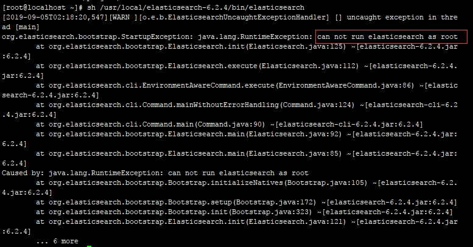
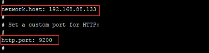
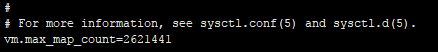
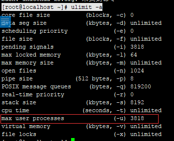
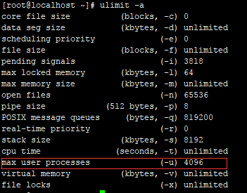
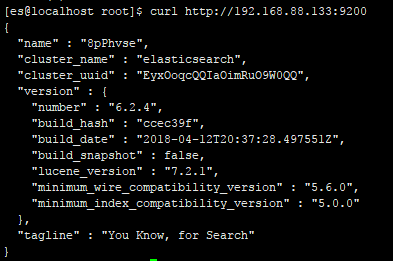
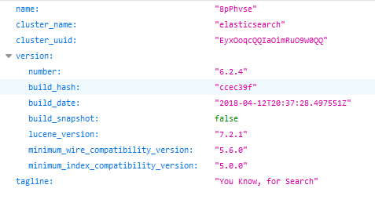

坑都已经踩好了 照着步骤一次成功 不多废话 走起
elasticsearch是用Java实现的 跑elasticsearch必须要有jre支持 所以必须先安装jre
可以参考 https://www.cnblogs.com/renxixao/p/11469754.html
解压后启动 elasticsearch
[root@localhost ~]# wget https://artifacts.elastic.co/downloads/elasticsearch/elasticsearch-6.2.4.tar.gz
[root@localhost ~]# tar -zxvf elasticsearch-6.2.4.tar.gz -C /usr/local/
[root@localhost ~]# sh /usr/local/elasticsearch-6.2.4/bin/elasticsearch
发现报错了

从5.0开始 elasticsearch 安全级别提高了 不允许采用root帐号启动 所以我们要添加一个用户用来启动 elasticsearch
开始之前先把防火墙关了 耽误事
[root@localhost ~]# systemctl stop firewalld.service
[root@localhost~]# systemctl disable firewalld.service//禁止防火墙开机启动
[root@localhost ~]# useradd es//创建es用户
[root@localhost ~]# chown -R es:es /usr/local/elasticsearch-6.2.4///把目录权限赋予给es用户
[root@localhost ~]# su es//切换至es用户
[es@localhost root]$ vi /usr/local/elasticsearch-6.2.4/config/elasticsearch.yml
把 host改为本机地址

记得把前面注释#删掉 再执行 sh /usr/local/elasticsearch-6.2.4/bin/elasticsearch
执行sh /usr/local/elasticsearch-6.2.4/bin/elasticsearch后可能会出现几种报错情况
注意：以下操作都要切换到root下执行
[1]: max file descriptors [4096] for elasticsearch process is too low, increase to at least [65536]
修改/etc/security/limits.conf文件 在文件末尾添加如下
[es@localhost root]$ su root
[root@localhost~]# vi /etc/security/limits.conf* hard nofile 65536
* soft nofile 65536
[2]: max number of threads [3818] for user [es] is too low, increase to at least [4096]
[root@localhost ~]# vi /etc/security/limits.d/20-nproc.conf
* soft nproc 4096
* hard nproc 4096
root soft nproc unlimited
[3]: max virtual memory areas vm.max_map_count [65530] is too low, increase to at least [262144]
/etc/sysctl.conf文件末尾添加 vm.max_map_count = 2621441

[root@localhost ~]# vi /etc/sysctl.conf
[root@localhost~]# sudo sysctl -p /etc/sysctl.conf//立即生效
以上三个是常见的三个错误 其余的请自行百度
[root@localhost ~]# ulimit -a
发现当前最大线程数还是为3818 别慌 重启下虚拟机 重启后才能生效

接着切换到es用户启动
[root@localhost ~]# su es
[es@localhost root]$ sh/usr/local/elasticsearch-6.2.4/bin/elasticsearch -d //加-d就是启动后台进程
[es@localhost root]$ ps -ef|grep elasticsearch
验证下服务是否正常运行 curl http://192.168.88.133:9200

出来这个 说明配置OK
浏览器请求下 http://192.168.88.133:9200/
